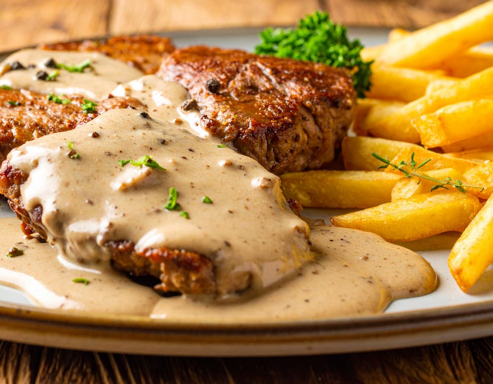

Lomo a la pimienta

Ingredientes
- 2 medallones de lomo de unos 3-4 cm de grosor (unos 200-250g cada uno)
- 2 cucharadas de granos de pimienta negra
- 2 cucharadas de manteca
- 1 cucharada de aceite de oliva
- 1/2 vaso de vino blanco (opcional)
- 200ml de crema de leche para cocinar
- Sal
- 1 chorrito de caldo para aligerar la salsa (opcional)
- Colocar los granos de pimienta sobre una tabla y machacarlos groseramente con la base de una sartén o un martillo de cocina. No dejar un polvo, sino trozos irregulares.
- Secar bien los medallones de lomo con papel de cocina. Presionar la pimienta machacada por ambos lados de la carne.
- Calentar una sartén a fuego fuerte con el aceite y la mitad de la manteca. Cuando esté bien caliente, colocar los medallones y sellar durante 3-4 minutos por lado para un punto jugoso. El tiempo exacto dependerá del grosor. Retirar la carne de la sartén y reservar sobre un plato.
- Desglasar el fondo de cocción con el ½ vaso de vino blanco, dejar evaporar el alcohol y raspar el fondo de la sartén para levantar todos los jugos caramelizados.
- Añadir la crema de leche a la sartén. Llevar a un hervor suave y cocinar durante unos minutos, removiendo, hasta que la salsa espese ligeramente. Probar y ajustar de sal.
- Volver a poner los medallones de lomo en la sartén con la salsa, junto con los jugos que hayan soltado en el plato. Cocinar por un minuto más para que se impregne bien del sabor. Si es necesario se puede agregar un poco de caldo en caso de que la salsa quede muy espesa.
- Servir los medallones de lomo a la pimienta bien calientes, cubiertos con abundante salsa. Acompañar con la guarnición elegida.